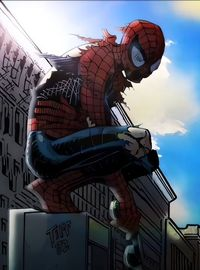

Spiderman
Spiderman is the best representation of a hero.
Spiderman Info
Spider-Man is the best representation of heroism because he is relatable and grounded in everyday struggles. Peter Parker starts as a regular person facing school, work, and personal hardships, yet still chooses to help others. Guided by “With great power comes great responsibility,” he shows that true heroism is about using one’s abilities selflessly, even when it means making sacrifices. His willingness to put others first, despite the cost, makes his actions feel authentic and inspiring.
His heroism also comes from his compassion and empathy. Spider-Man fights not just to defeat villains, but to protect the innocent and uphold justice. He faces loss, failure, and public criticism, yet keeps choosing to do what’s right. This persistence proves that heroism is not a one-time act, but a daily commitment. Spider-Man’s story shows that anyone, no matter their background, can rise to meet challenges and make a difference.
| Year | Movie Name | Main Villian |
|---|---|---|
| 2002 | Spider-Man | Green Goblin |
| 2004 | Spider-Man 2 | Doctor Octupus |
| 2007 | Spider-Man 3 | Venom/Sandman/Goblin |
| 2012 | The Amaazing Spider-Man | The Lizard |
| 2014 | The Amazing Spider-Man 2 | Electro/Green Goblin |
| 2017 | Spider-Man: Homecoming | Vulture |
| 2018 | Spider-Man: Into The Spiderverse | Kingpin |
| 2019 | Spider-Man: Far From Home | Mysterio |
| 2021 | Spider-Man: No Way Home | Green Goblin/Doc Oct/Electro/Sandman/Lizard |
| 2023 | Spider-Man: Across The Spiderverse | Spot |